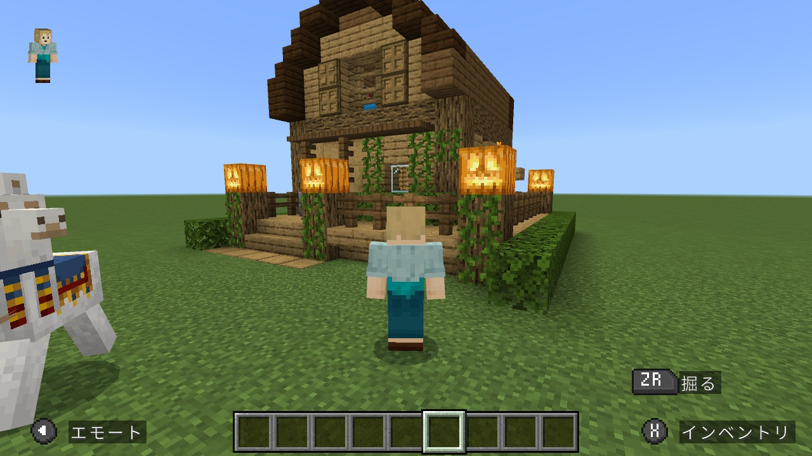
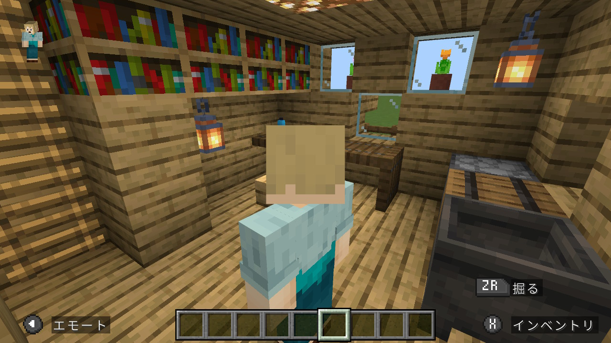
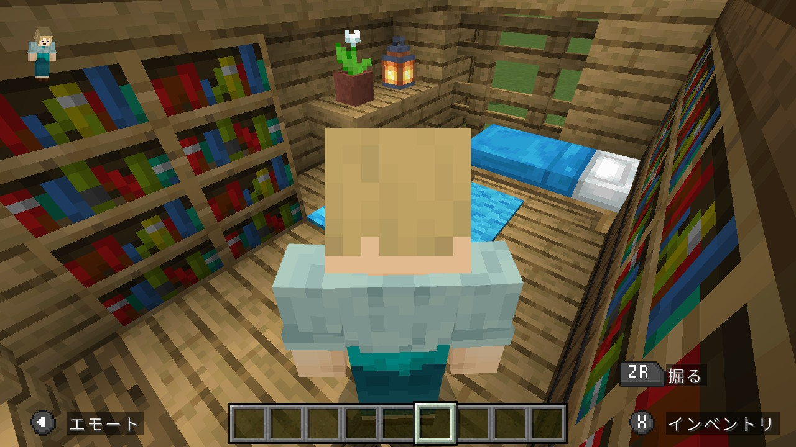

今日も推しシンガーの配信を聞きながら、動画を参考にしてログハウスを作った。前回のものよりも本格的。ちょこちょこ動画と違っている部分もある。この時季なので外のランタンはすべてジャック・オ・ランタンにしてみた。クリスマスシーズンになったら装飾を変えてツリーも置きたい。
家の周りに木を生やして森の中にしたい。フラットだと広い地形が最初から確保されていて楽だけど、建物が殺風景な中にぽつんと建っている感じになってしまう。



2026.10.12
今日も推しシンガーの配信を聞きながら、動画を参考にしてログハウスを作った。前回のものよりも本格的。ちょこちょこ動画と違っている部分もある。この時季なので外のランタンはすべてジャック・オ・ランタンにしてみた。クリスマスシーズンになったら装飾を変えてツリーも置きたい。
家の周りに木を生やして森の中にしたい。フラットだと広い地形が最初から確保されていて楽だけど、建物が殺風景な中にぽつんと建っている感じになってしまう。


